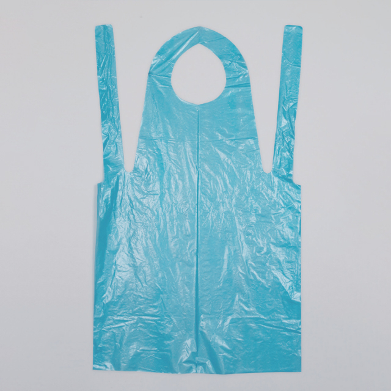

In the daily reality of healthcare, not every PPE item gets equal attention. Isolation gowns and surgical drapes often dominate procurement discussions, while the humble disposable apron tends to slip under the radar. Yet across hospitals, clinics, and care facilities worldwide, polyethylene (PE) aprons are the single most widely used barrier garment for routine patient care.
Here is the straightforward reason: disposable PE aprons deliver reliable fluid protection at a fraction of a cent per use. For tasks where a full isolation gown would be overkill — feeding patients, wound dressing changes, bedside bathing, or handling soiled linens — a lightweight PE apron is exactly the right tool. Understanding what separates a good apron from a disappointing one is what this guide covers.
What Is a Disposable PE Apron?
A disposable PE apron is a single-use protective garment made from polyethylene film — the same material family used in plastic bags and packaging, but engineered for healthcare-grade performance. These aprons typically feature:
- Full-body front coverage — extending from neck to mid-thigh or below the knee depending on the size
- Adjustable neck strap or tie — a simple loop that goes over the neck for quick donning and doffing
- Long waist ties — wrap-around ties that secure the apron at the back, accommodating various body sizes
- Waterproof barrier — the PE film itself is inherently impermeable to liquids, making it effective against blood, bodily fluids, and chemical splashes
The simplicity is the point. There are no zippers, snaps, or complex closures to fumble with when a healthcare worker needs to get protected quickly. That matters more than you might think during a busy shift.
Where PE Aprons Fit in the PPE Hierarchy
Understanding when to use a PE apron versus other protective garments is critical for both safety and cost management. Here is a practical framework:
Disposable PE Apron — Routine Fluid Protection
Best for: patient feeding, bedside care, non-surgical procedures, environmental cleaning, food service in healthcare settings, and handling soiled materials. PE aprons provide a reliable liquid barrier without the weight or cost of a full gown. They are the workhorse of day-to-day clinical hygiene.
Disposable Isolation Gown — Moderate-Risk Clinical Tasks
Best for: wound care, catheter insertion, handling potentially infectious patients, and procedures requiring full arm and torso coverage. Isolation gowns (such as SMS or CPE gowns) offer higher protection levels and full-body coverage. See our procurement guide for disposable isolation gowns for a deeper dive.
Surgical Gown — Sterile Operating Room Use
Best for: operating room procedures where sterile field maintenance is mandatory. These are reinforced, tested to AAMI PB70 levels, and designed for surgical environments — significantly higher cost and performance than a PE apron.
Rule of thumb: If the task involves potential splashes but not sterile field requirements, a PE apron is usually sufficient and far more economical than a gown. Match the PPE to the actual risk level — not to habit.
Key Procurement Considerations for PE Aprons
1. Film Thickness (Gauge)
Polyethylene apron thickness is measured in microns (μm) or gauge. Common ranges include:
- 12–15 μm (lightweight) — Budget-friendly, suitable for food service and low-risk patient care. Thin enough to fold compactly but still provides basic fluid protection.
- 18–25 μm (standard) — The sweet spot for most clinical applications. Offers better tear resistance and more confident liquid protection during bedside procedures.
- 30+ μm (heavy-duty) — For environments with higher splash volumes or rougher handling conditions. These feel more like CPE (chlorinated PE) aprons with a textured surface and greater durability.
2. Size and Coverage
Adequate coverage matters more than many procurement teams realize. Standard adult PE aprons measure approximately 70 × 120 cm, but taller healthcare workers or situations involving higher splash risks may benefit from XL variants (80 × 140 cm or larger). The apron should extend below the knee for maximum protection during standing procedures.
3. Embossing vs. Smooth Film
Embossed (textured) PE aprons offer several advantages over smooth film:
- Better grip — textured surfaces reduce slipping during patient handling
- Improved comfort — embossing reduces the clingy, sticky feeling of smooth plastic against clothing
- Enhanced perceived quality — healthcare workers consistently rate embossed aprons higher in user satisfaction surveys
4. Packaging and Dispensing
Individual flat-fold packaging enables one-at-a-time dispensing — critical for infection control. Bulk-packed aprons (100 per box or bag) are more economical but require careful handling to avoid cross-contamination during dispensing. For ward-level distribution, individual packaging is strongly preferred.
The Cost Equation: Why PE Aprons Make Financial Sense
Let us put the numbers in perspective. A quality disposable PE apron costs fractions of a cent per unit. By comparison:
- A reusable fabric apron requires laundering, which adds water, detergent, energy, and labor costs — easily exceeding the cost of dozens of disposable units
- Each reusable apron can harbor pathogens between washes, especially in high-turnover environments
- Reusable aprons eventually degrade and require replacement anyway
When you factor in infection prevention, staff convenience, and the elimination of laundering logistics, disposable PE aprons deliver one of the best value propositions in the entire PPE category. For facilities processing hundreds of patient-care interactions per day, the savings are measurable and significant.
Quality Standards and Compliance
While PE aprons are generally classified as non-sterile, single-use protective garments, reputable manufacturers adhere to several standards:
- ISO 13485 — Quality management system for medical device manufacturers (Newrise Medical is ISO 13485 certified)
- CE marking — Compliance with European PPE Regulation (EU) 2016/425 for Category I PPE
- FDA registration — For products marketed in the United States as general-use protective apparel
- Material safety — PE film should be free of harmful additives, phthalates, and latex (important for allergy-sensitive environments)
When evaluating suppliers, ask for test reports and compliance certificates. A responsible manufacturer will provide these documentation sets without hesitation.
Emerging Trends in Disposable Apron Design
The PE apron market is evolving. Several trends are worth watching in 2026 and beyond:
Biodegradable PE alternatives. Manufacturers are experimenting with bio-based polyethylene and PLA (polylactic acid) films that offer similar barrier properties with improved end-of-life profiles. These products are not yet mainstream, but pilot programs in European hospitals show promising results.
Improved ergonomics. Wide-neck designs, pre-tied waist configurations, and contoured cuts that better accommodate healthcare workers wearing scrubs or other uniform layers are gaining traction. Comfort drives compliance — and compliance drives safety.
Color-coded aprons. Some facilities are adopting color-coding systems (blue for general patient care, yellow for isolation zones, green for food service) to reinforce infection control protocols and simplify staff training.
Why Newrise Medical for PE Aprons?
Changzhou Newrise Medical has manufactured disposable PE aprons since 2004, serving hospitals, distributors, and OEM partners across more than 40 countries. Our PE aprons feature:
- Consistent film quality — Uniform thickness with no weak spots or thin patches
- Multiple size options — Standard and XL sizes to fit diverse body types
- Embossed and smooth variants — Choose based on your facility's preferences
- Flexible packaging — Individual flat-fold or bulk packs to match your dispensing workflow
- OEM/ODM capability — Custom sizes, colors, branding, and packaging on request
- ISO 13485 & CE certified — Documented quality you can audit and trust
Whether you need 10,000 units for a single facility or consistent monthly supply for a distribution network, our production lines are built to scale with your demand.
Making the Right Choice
Disposable PE aprons are not glamorous. They will never win a design award. But for every nurse, caregiver, and clinical support worker who puts one on before feeding a patient or changing a dressing, it is the difference between arriving home clean or carrying contaminants on their uniform.
The best PPE strategy does not over-engineer simple problems. It matches the right protection level to the actual risk — and PE aprons remain the right answer for a very large category of daily healthcare tasks.